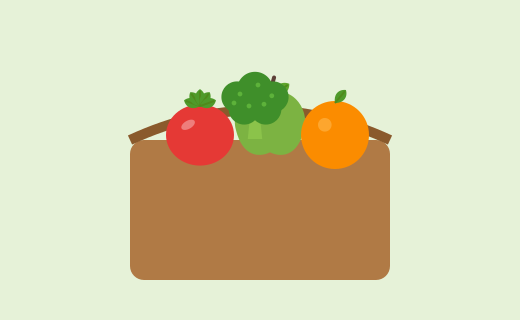
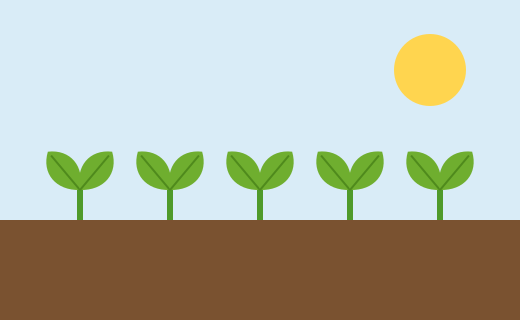
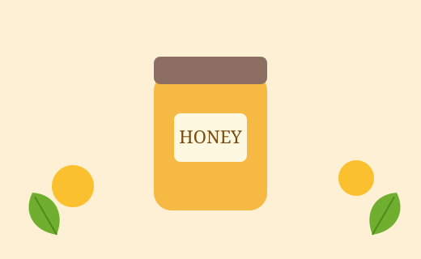

How to Pick the Freshest Seasonal Produce
Learn the simple visual and touch cues that tell you a fruit or vegetable was harvested at its peak.
Read more →
Learn the simple visual and touch cues that tell you a fruit or vegetable was harvested at its peak.
Read more →
Healthy, living soil feeds plants naturally. Discover how it changes the flavour and nutrition on your plate.
Read more →
Small pinches make big differences. Try these quick ideas to bring warmth and aroma to simple meals.
Read more →